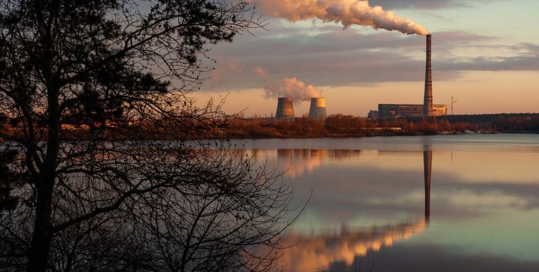
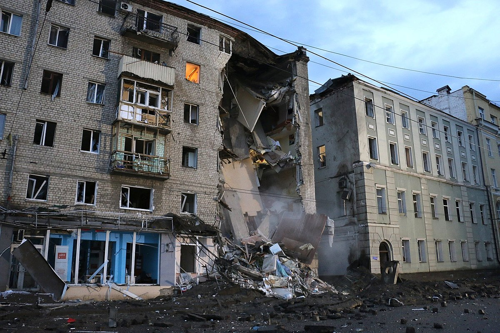
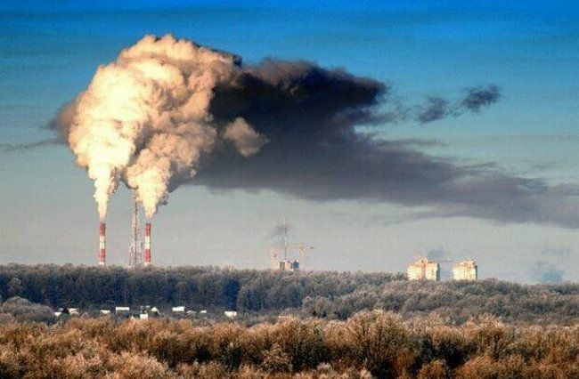
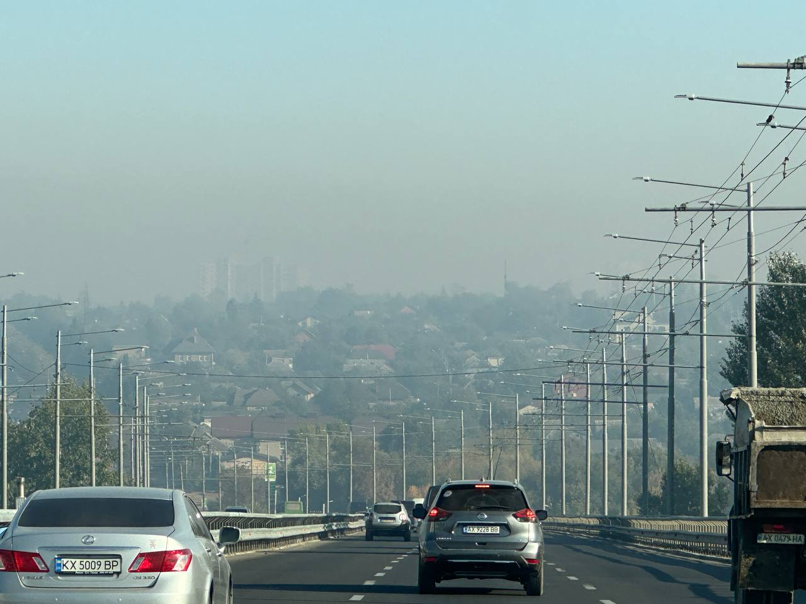
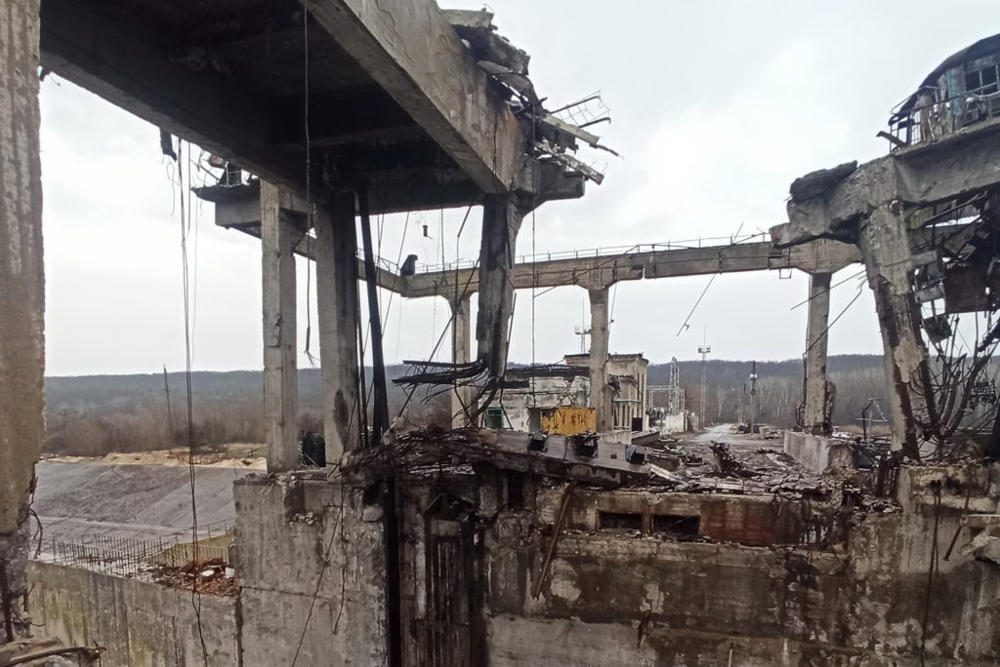

Екологічні проблеми Харкова

Харків, як і багато великих міст, стикається з численними екологічними проблемами. Однією з основних проблем є забруднення повітря. Низька якість повітря в Харкові зумовлена великою кількістю автомобілів, промислових підприємств і теплових електростанцій. Високий рівень забруднення створює ризики для здоров'я мешканців міста, особливо для людей, що страждають від астми та серцево-судинних захворювань. Крім того, Харків також стикається з проблемою забруднення води, що спричинено скидами промислових відходів та недостатнім очищенням стічних вод. Важливою екологічною проблемою є також нестача зелених зон та низький рівень озеленення в деяких частинах міста.
Війна та її вплив на екологію Харкова

Війна, що розгорнулася на сході України в 2014 році, а також військовий конфлікт, який розпочався в 2022 році, серйозно вплинули на Харків. Внаслідок обстрілів і бомбардувань було пошкоджено багато житлових і промислових будівель, інфраструктура міста зазнала великих руйнувань. Місто переживало періоди енергетичних та водопостачальних криз, що створювало додаткові труднощі для мешканців. Крім того, війна значно вплинула на екологічний стан Харкова, оскільки численні вибухи та знищення промислових об'єктів спричинили викиди токсичних речовин в атмосферу і грунти. Після відновлення частини міста багато жителів стикаються з проблемами здоров'я через радіаційне і хімічне забруднення, яке виникло внаслідок військових дій.
Екологічний стан



Екологічний стан міста характеризується як стабільно напружений, хоча спад виробництва частково стримують наростання негативних процесів деградації навколишнього природного середовища. За масштабами забруднення навколишнього природного середовища Харків посідає 15-17 місце в Україні. Найвагоміші чинники антропогенного навантаження на довкілля: значне зростання кількості автомобільного транспорту при надзвичайно низьких екологічних параметрах автомобілів, що спричинило збільшення шкідливих викидів в атмосферу. Це обумовило те, що автомобільний транспорт став найнесприятливішим фактором стану атмосферного повітря міста; накопичення мулового осаду, що утворюється на очисних каналізаційних спорудах міста та складується на мулових полях фільтрації, виводить з обігу 126 га міських земель (мулові поля є екологічно небезпечними, тому що призводять до забруднення: атмосферного повітря — пилом та парниковими газами (метан, метилмеркаптан), підземної гідросфери — фільтратом); понад 80 % забруднень, що надходять у водні об'єкти, і перш за все річки, припадає на неочищений поверхневий стік з території міста. Це призвело до замулювання русел, забрудненню вод, порушенню гідрологічного режиму та технічного стану річок; відсутність сучасних підприємств із переробки побутових і промислових відходів призвела до накопичення на території міста значної кількості відходів. Не менш значними є проблеми покращення стану зеленої та лісової зон Харкова, їхнього захисту від впливу фізичних факторів. Це особливо важливо через те, що місто зростає за рахунок ущільнення міської забудови.